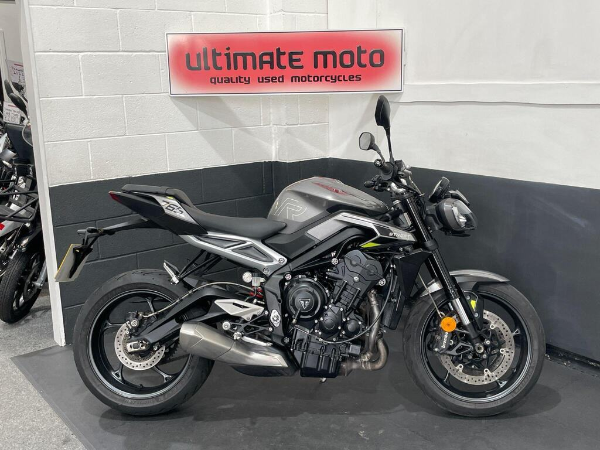

Same engine upgrades, sweeter price
2023+ Street Triple 765 R
“The R is still a joy to ride and will cover ground every bit as quickly as the RS.”

2023 Street Triple R in silver, 9,932 miles, £6,990.
Seller: Ultimate Moto Limited, Boldon Colliery · (0191) 511 8753
| Price | £6,990 |
|---|---|
| Year | 2023 |
| Miles | 9,932 miles |
| Model | Street Triple R · Silver |
| Location / dealer | Ultimate Moto Limited, Boldon Colliery |
| Distance from Poole | ≈ 293 miles as the crow flies (straight line from Poole BH15 1AA, estimated from “Boldon Colliery”) |
| On the lists | All bikes |
| Registration | Not stated in the ad, and I didn’t check the photos for this listing |
| Seller type | Trade (ad) |
| Phone (ad) | (0191) 511 8753 |
| AutoTrader model description | R X-ring Euro 5 765cc |
| First registered (ad) | 01/07/2023 |
| Owners | 1 (ad) |
| From the ad | “Excellent Condition Example Of The Popular Triumph Street Triple 765 R ABS Finished In Silver. Fitted With TFT Display, Twin Brembo Front Brakes, Paddock Stand Bobbins, Rider Modes, Adjustable Brake Lever, Rear Hugger, Braided Hoses, Quickshifter. If Less Than 6 Months Will Come With A Year MOT. Finance Available, Part Exchange Welcome, UK Mainland Sanitised Delivery Available From Only 156 Pounds, Warranty Extension…” |
Facts marked (ad) come from the listing. Ask the seller to show you the paperwork.
Several 2023–24 RS owners on MCN say the quickshifter stopped working at under 2,000 miles. Triumph has since revised the sensor, and dealers replaced it under warranty. Test both up and down shifts on a test ride, and ask whether the sensor has already been replaced. Source: MCN owners’ reviews ↗
MCN notes one owner reporting an engine coolant leak. Look for damp patches or crusty residue around the engine cases, the water pump and the radiator hoses. Source: MCN review ↗
Triumph’s technical bulletin TB262 covers the 765 R, RS, RX and Moto2. It is a workshop bulletin, not a safety recall. If thin valve shims are needed at a valve-clearance check, the dealer must fit updated retainers (part 1131111). Ask whether it has been done, and check for any outstanding recalls on the frame number. Source: Triumph TB262 ↗
Registration: Not stated in the ad, and I didn’t check the photos for this listing
Without a confirmed registration I couldn’t check the DVLA and MOT records. Ask the seller for the registration, then use the GOV.UK MOT history and DVLA vehicle enquiry checks.
| Spec | 2023+ R |
|---|---|
| Power | 120PS @ 11,500rpm |
| Torque | 80Nm @ 9,500rpm |
| Weight | 189kg wet |
| Seat height | 826mm |
| Front suspension | Showa 41mm SFF-BP, fully adj. |
| Rear suspension | Showa piggyback, fully adj. |
| Front brakes | 2×310mm, Brembo M4.32, OC-ABS |
| Electronics | Up/down Shift Assist, cornering ABS & TC |
| Fuel tank | 15L |
Sources: Triumph UK – Street Triple 765 spec · Triumph media – 2023 range · Triumph – Moto2 spec · Triumph UK – 765 RX · Triumph media – 2020 RS · MCN – 2020–22 RS review · Motorcycle.com – 2020 RS first ride · Motorcycle.com – 2020 R first look
“The R is still a joy to ride and will cover ground every bit as quickly as the RS.”
Seller: Ultimate Moto Limited, Boldon Colliery · (0191) 511 8753